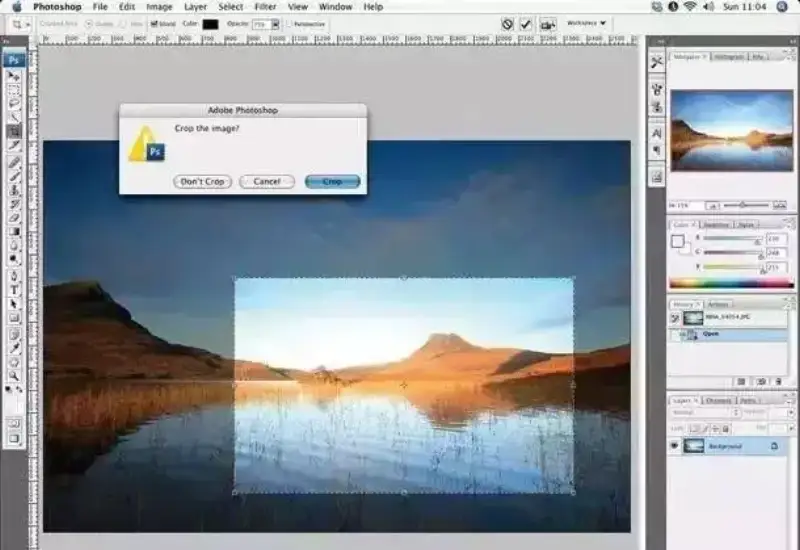
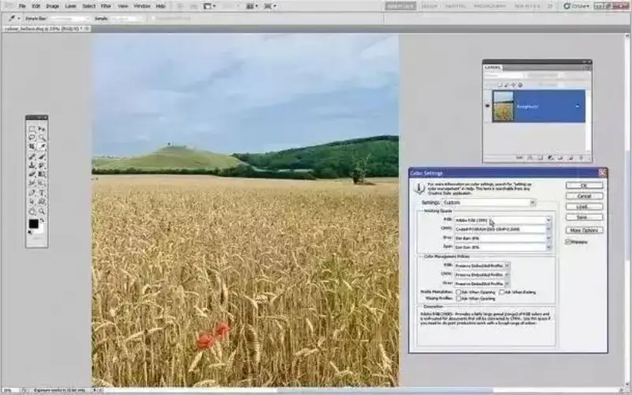

In a way, photography is the process of framing reality, and composition is its craft. We have already shared several articles on composition. If you cannot even get the basics of composition right, how can you shoot good work? So here is a list of 10 major composition mistakes. See which ones you have made. If you have made them, you must correct them.
1. The main subject is too small
When we see a beautiful scene, we can focus on only the most beautiful point. A photo is different. Once you take it, the scenery around the subject also becomes clear and enters the frame. Then the clearly visible surroundings make the subject seem unimportant. So before you press the shutter, you need to think:Would the frame be more expressive if you stepped forward a few paces or moved closer with the lens?
2. Shooting at first sight
Many beginners, when they see something beautiful, pick up their camera or phone and shoot right away. They forget the important step of thinking about how to shoot it well. When you see something and shoot it directly, you record its surface, but you do not catch the mood of the whole setting or its soul. You do not think, so you do not know which angle shows it best. When you see a flower in a garden, do not only want to photograph that one flower. Look at the setting around it. See if you can find an angle that shows the whole sea of flowers.
3. The subject is dead center
Sometimes placing the subject in the center is fine, but in most cases it is better to follow the rule of thirds and put the subject to one side. Many cameras can show rule-of-thirds guides, and you can place the subject at the intersection of two guides.
4. An empty foreground
Whether you shoot landscape or a subject, the foreground needs a main object that gives the frame layers and draws the eye. If the foreground is empty, the photo has no pull for the viewer. It is seen through at a glance. For the eye it is like an obstacle that it just wants to step over. It is a waste of the frame's space. Most landscape photos place some object in the foreground to create a point of visual interest.
5. Adjusting the aspect ratio in post
This often goes together with an empty foreground, because people now like to crop out empty space in post to improve the composition. Cropping is fine, but if you think about the aspect ratio when you shoot, you are more likely to get a good photo. Cameras usually have an aspect ratio setting, and you can see the effect of different ratios through the viewfinder or screen.

6. A messy background
Sometimes we can avoid this mistake by changing the shooting angle, changing the lens, or using a wider aperture. The key is to make these changes before you press the shutter.Make a habit: before you shoot and frame, look around for the best background and the best spot. If you need to wait for something, find the background first, then wait for it to happen and shoot.
7. Wrong depth of field
Everyone knows that depth of field is a great tool for composition. It decides which elements in the frame are sharp. Shooting at a small aperture gives deep depth of field, which is usually fine. But when you want the subject to stand out from its surroundings, it is better to use a wide aperture to control the depth of field.
8. Unrelated elements in the frame
It is best when all the elements in the photo are unified and related. If a landscape photo has a set of footprints as a leading line, running from the foreground to a grand subject, it connects two elements of the frame and also guides the viewer's eye through the work. That is the job of leading lines. They help us understand the mood of the landscape and the balance between its elements.
9. A tilted frame
A tilted angle is never good in any work and always costs points. Many cameras have an electronic level, and many phones have it too. It can show on the viewfinder or screen to make sure your frame is level.
10. Ignoring color
Color in a work matters a great deal to whether it succeeds. When you compose, you must take this into account. When an object's color is the complement of its surroundings, the frame becomes more striking. For example, the complement of red is green. A red flower in a green field is sure to be the most eye-catching thing in the frame.

How many of these 10 common composition mistakes have you made?